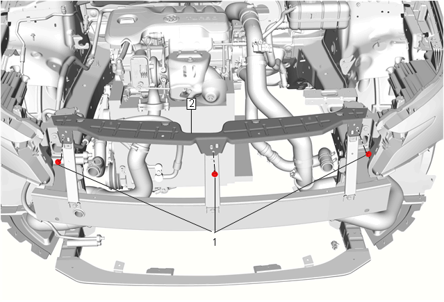
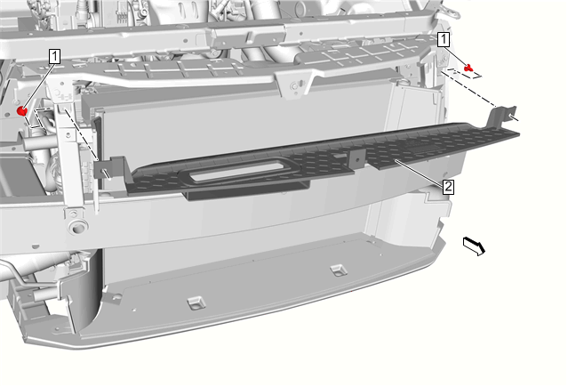
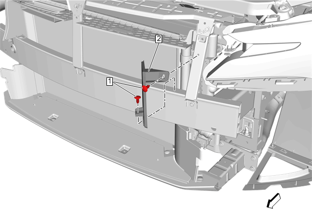
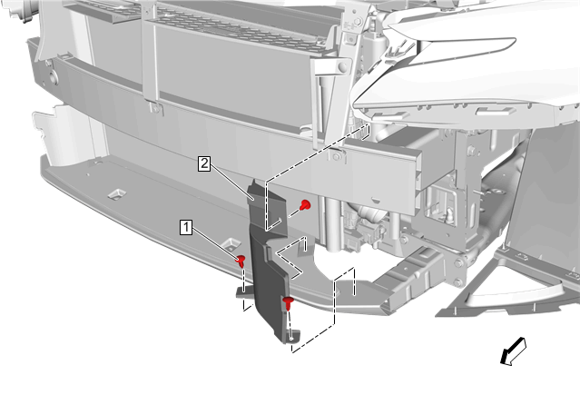
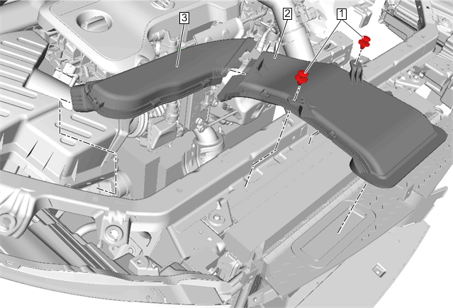

空调冷凝器的更换
拆卸程序
- 1.断开蓄电池负极电缆。蓄电池负极电缆的断开和连接
- 2.回收制冷剂。制冷剂回收和重新加注
- 3.空调压缩机和冷凝器软管@空调冷凝器»断开–空调压缩机和冷凝器软管的更换
- 4.空调蒸发器软管总成@空调冷凝器»断开–空调蒸发器软管总成的更换
-
5.前保险杠蒙皮中间支架(2)»拆下 –前保险杠蒙皮中间支架的更换
-
6.散热器上空气导流板(2)»拆下–散热器空气上导流板的更换
-
7.左右散热器侧上导流板（2）»拆下–散热器侧上导流板的更换注意:左右侧散热器侧上导流板的更换方式相同。
-
8.左右散热器侧下阻风板（2）»拆下–散热器侧下阻风板的更换注意:左右侧散热器侧下阻风板的更换方式相同。
-
9.进气管 -前管（2）»拆下 –进气管的更换、进气管的更换（空气滤清器总成内）
-
10.空调冷凝器固定螺栓(1)»拆下[2x]

- 11.空调冷凝器(2)@车辆»拆下
安装程序
-
1.空调冷凝器(2)@车辆»安装
-
2.空调冷凝器固定螺栓(1)»安装并紧固[2x]5N•m(44 lb in)告诫：有关紧固件的告诫
- 3.进气管 -前管（2）»安装 –进气管的更换、进气管的更换（空气滤清器总成内）
-
4.左右散热器侧下阻风板（2）»安装–散热器侧下阻风板的更换注意:左右侧散热器侧下阻风板的更换方式相同。
-
5.左右散热器侧上导流板（2）»安装–散热器侧上导流板的更换注意:左右侧散热器侧上导流板的更换方式相同。
- 6.散热器上空气导流板(2)»安装 –散热器空气上导流板的更换
- 7.前保险杠蒙皮中间支架（2）»安装 –前保险杠蒙皮中间支架的更换
- 8.空调蒸发器软管总成@空调冷凝器»连接 –空调蒸发器软管总成的更换
- 9.空调压缩机和冷凝器软管@空调冷凝器»连接 –空调压缩机和冷凝器软管的更换
- 10.重新加注制冷剂。制冷剂回收和重新加注
- 11.连接蓄电池负极电缆。蓄电池负极电缆的断开和连接